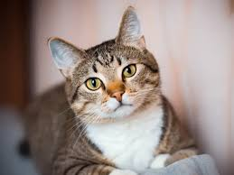
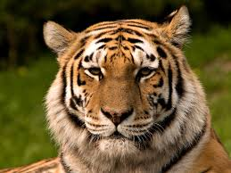
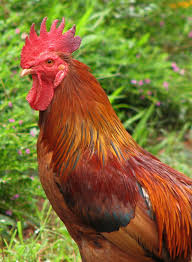

Lalo
Este es mi perrito Lalo, tiene 3 meses.
Este es mi perrito Lalo, tiene 3 meses.

Este es mi perro Asgard, tiene 2 años.

Este es mi gato Tom, tiene 1 año.

Come mucho.

Esta es mi lorita, tiene 1 año.

Este es mi gallo Sancocho, tiene 9 meses.